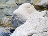

salt

Definition: In chemistry, a salt is a chemical compound consisting of an ionic assembly of positively charged cations and negatively charged anions, which results in a compound with no net electric charge. A common example is table salt, with positively charged sodium ions and negatively charged chloride ions.
Source: Wikipedia
Wikipedia Page
Wikidata Page
Occurs in: